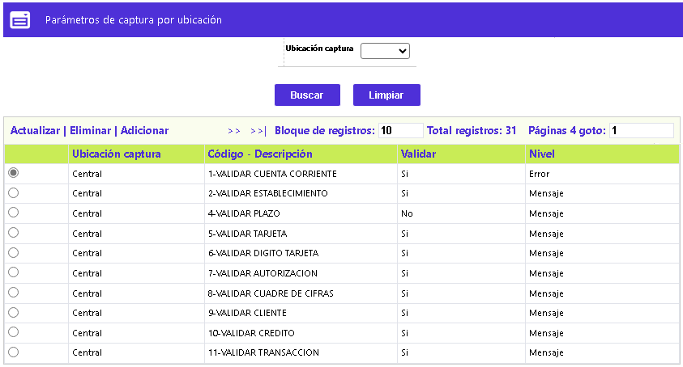
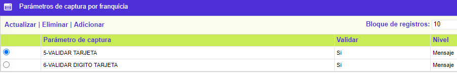
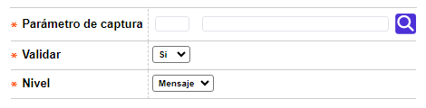
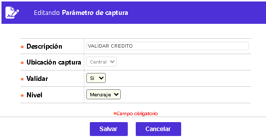

Parámetros de captura por marca
La funcionalidad a continuación descrita, permite a la entidad determinar las validaciones iniciales que se deben hacer para cada una de las franquicias al momento de efectuar captura manual de movimiento

El formulario contiene la opción Parámetros de captura desde la cual se invoca el formulario en el cual se encuentran las diferentes validaciónes a efectuar en el momento de la captura, para la marca seleccionada por el usuario.

El formulario contiene los enlaces: Actualizar, Eliminar y Adicionar.
Adicionar: Al activar ese enlace se despliega un formulario.

Descripción de campos
Código de validación |
Campo tipo combo en el cual se seleccionan los parámetros de captura que se van a aplicar para la marca. |
Validar |
En este campo se selecciona entre Si o NO se debe hacer la validación para el parámetro de captura correspondiente |
Nivel |
Campo tipo combo con las opciones Error o Mensaje para indicar la respuesta a la aplicación de la validación efectuada; cuando se escoge la primera opción el procedimiento de validación se detiene, mientras que en el segundo caso solamente despliega un mensaje indicando la falla del mismo. |
Actualizar: Si el usuario selecciona un registro e invoca la opción Actualizar se despliega un formulario en el cual los campos modificables son Validar y Nivel.
